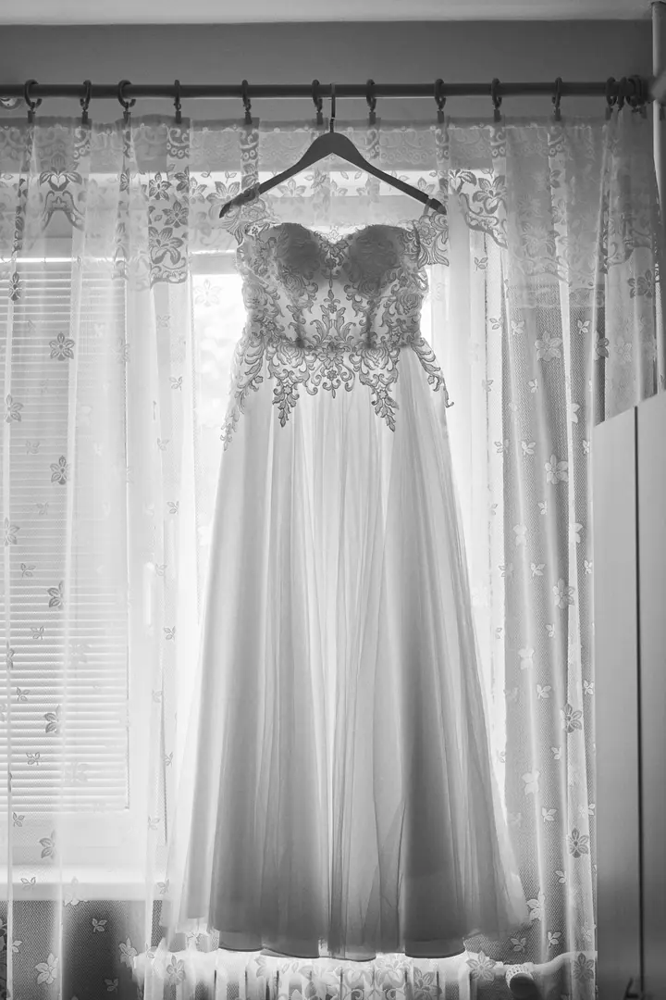
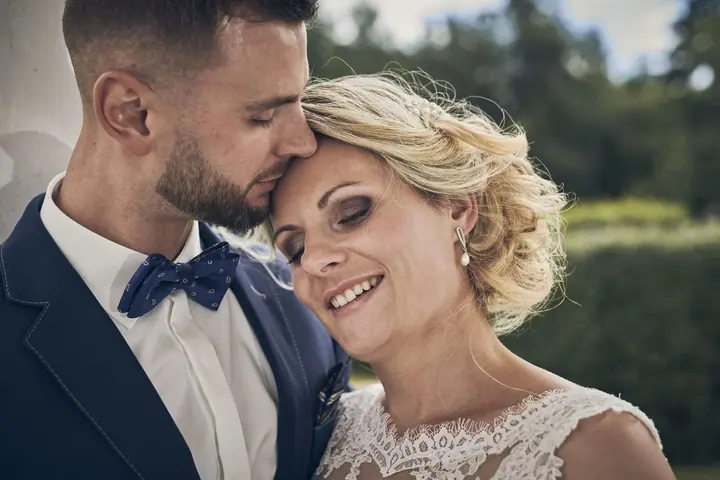
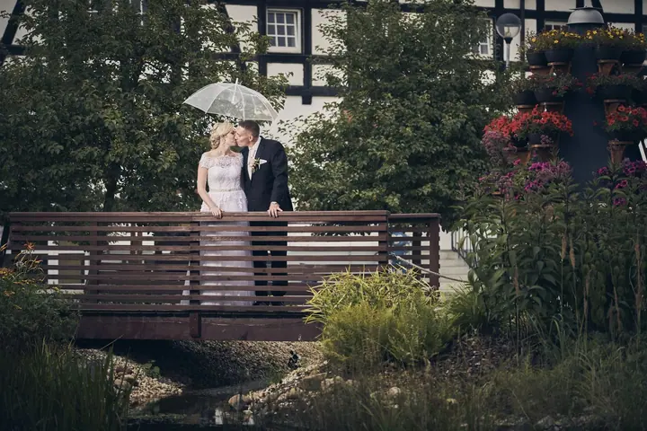

Svatební focení
Svatbu fotím od příprav až po večerní tanec, vždy s předsvatební schůzkou a asistentkou. Balíčky začínají na 9 500 Kč a liší se délkou focení a počtem upravených fotek.

Jmenuji se Arnošt Moucha a jsem fotograf z Chebu. Nejčastěji fotím svatby, od ranních příprav nevěsty až po tanec s hosty. Kromě toho fotím plesy a firemní akce, provozu…
Rezervovat termínJsem fotograf z Chebu a nejvíc času trávím na svatbách. Fotím celý den tak, jak jde: přípravy, obřad, gratulace, focení novomanželů venku i večerní zábavu.


Na svatby nejezdím sám, pomáhá mi asistentka. Před svatbou se vždy potkáme a všechno si projdeme. Druhý den po svatbě vám pošlu zhruba deset upravených fotek na ukázku, celou galerii předám do pěti týdnů.
Kromě svateb fotím plesy a firemní akce, vozím fotokoutek s tiskem fotek na místě a fotím také interiéry, hotely, restaurace a produkty. Pokud vám žádný z mých balíčků nesedí, ozvěte se. Určitě se na všem domluvíme.
Co fotím
Svatbu fotím od příprav až po večerní tanec, vždy s předsvatební schůzkou a asistentkou. Balíčky začínají na 9 500 Kč a liší se délkou focení a počtem upravených fotek.
Fotím celovečerní akce, hlavně maturitní a vysokoškolské plesy. Z plesu dostanete 500 až 600 upravených fotografií v online galerii.
Na svatbu nebo firemní akci přivezu fotokoutek s obsluhou, rekvizitami a výběrem pozadí. Fotky se tisknou na místě ve formátu 10×15 cm, klidně i s vašimi jmény nebo datem.
Fotím nemovitosti, hotely, restaurace, provozovny, reklamy i produkty. Cenu domluvíme individuálně podle rozsahu.
Postup
Zavolejte mi nebo napište přes kontaktní formulář. Domluvíme termín a vybereme balíček, případně sestavíme vlastní.
Před svatbou se sejdeme a projdeme si program dne, místa a to, na čem vám záleží. Spolupráci stvrdíme smlouvou.
Fotím s asistentkou po dobu, kterou máte v balíčku, od pěti hodin až po celý den.
Druhý den dostanete přibližně deset upravených fotek na ukázku. Celou online galerii předám do pěti týdnů a fotky k úpravě si můžete vybrat i sami.
Otázky
Balíčky začínají na 9 500 Kč (Basic, přibližně 150 fotek). Standard na 5 hodin stojí 16 000 Kč, Top na 8 hodin 22 000 Kč a Exclusive na celý den (max. 13 hodin) 28 000 Kč. Potřebujete balíček na míru? Ozvěte se.
Druhý den po svatbě vám pošlu přibližně deset fotek na ukázku. Všechny fotky předám do pěti týdnů v online galerii, kde si je můžete prohlížet, stáhnout v plné kvalitě a rovnou objednat tisk.
Ano. Ke svatebnímu balíčku máte na fotokoutek slevu 20 %. Fotky se tisknou na místě ve formátu 10×15 cm, i s grafikou jako jména nebo datum.
Ano, fotím maturitní i vysokoškolské plesy. Celovečerní focení s fotokoutkem nabízím za zvýhodněnou cenu 9 000 Kč a dostanete 500 až 600 upravených fotografií.